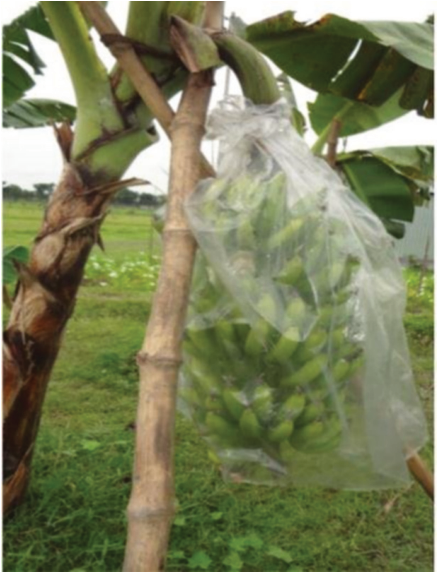

Agriculture for Secondary Schools
De-budding/de-navelling
This refers to removing the male bud from a banana plant after the bunch
formation is complete. Tools used during this process should be disinfected. The
benefits of removing the male bud include increased yield, uniform hands, and
reduced thrips attack.
Bagging
Covering banana bunches with special plastic bags protects them from thrips and
other insects and speeds up the maturation process.
Figure 2.12: Bagging in banana
Harvesting
Bananas should be harvested at the right stage of maturity in order to get good-
quality fruits. It is recommended to follow the maturity indices such as fruit size,
shape, peel and flesh colour to achieve the purpose. The maturity indices are as
elaborated hereafter.
36
Student’s Book Form Two